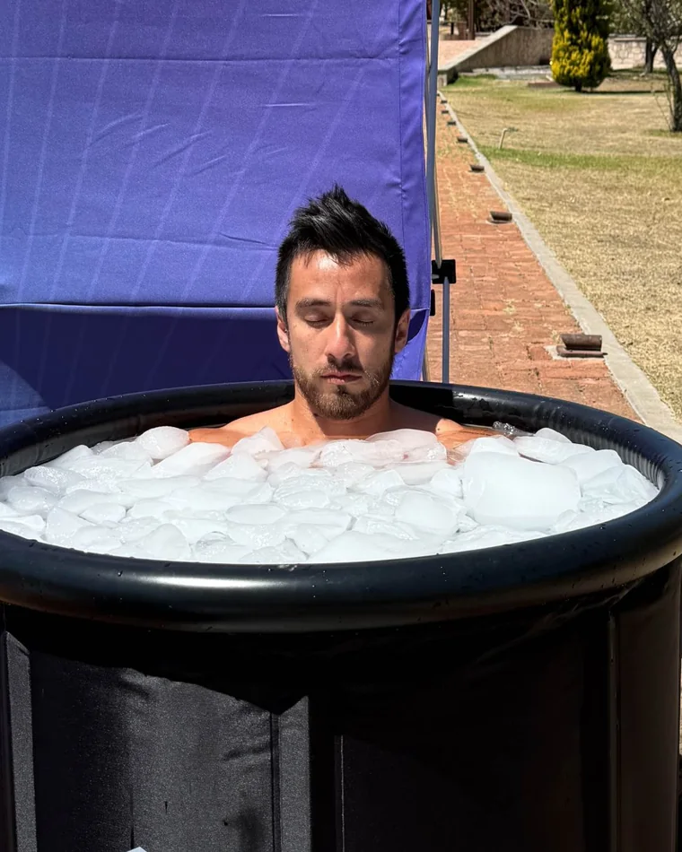

La salud no se resuelve desde una sola disciplina. Se resuelve conectándolas.
Como ingeniero mecatrónico, aprendí a conectar e integrar sistemas complejos hacia un mismo objetivo. Hoy aplico esa misma visión para abordar los desafíos actuales de la salud.
Impulso la convergencia entre ciencia, tecnología, biología, filosofía y dialéctica, convencido de que los problemas de salud no pertenecen a una sola disciplina; sus soluciones tampoco.

De «ingenio», del latín ingenium, «engendrar, producir», y el sufijo -ería (conjunto); «estudio y aplicación de tecnología».
Aplicación práctica de la ciencia, las matemáticas y la tecnología para diseñar, construir y optimizar estructuras, máquinas, sistemas y procesos.
Del latín ingenium («engendrar, producir, cualidad innata del ingenio») y el sufijo -ería («actividad, oficio o conjunto de conocimientos»), en convergencia con bienestar (del latín bene stare, «estar bien», estado de equilibrio físico, mental y social).
Aplicación práctica de las ciencias biológicas, tecnológicas y humanas para diseñar, modelar y optimizar sistemas, entornos, procesos e intervenciones orientados a preservar, restaurar y maximizar la salud integral y a promover la longevidad funcional.

Mi compromiso con la búsqueda de las causas y la detección temprana de enfermedades crónicas es lo que me impulsa.
Creo herramientas y productos que impactan directamente en la vida de las personas.
No repito lo que ya existe solo porque así es en todos lados. Cuestiono el modelo de salud reactivo y construyo uno distinto.
Mido mi trabajo por las vidas que transforma, y cada vida transformada también impacta la de quienes la rodean. Así es como muevo a una comunidad entera hacia el bienestar.
El conocimiento que salva vidas no debería ser un lujo. Acerco la ciencia y la tecnología a quien las necesita, no solo a quien puede pagarlas.